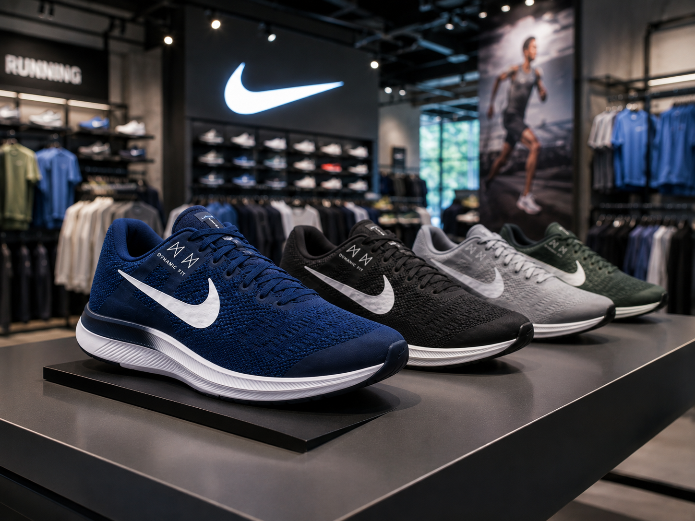

O verdadeiro culpado pela dor de quem corre
A cada passada que você dá correndo, o impacto que sobe pelo seu calcanhar, joelho e quadril pode chegar a duas ou três vezes o peso do seu corpo. Um corredor de 80kg despeja quase 240kg de impacto na articulação a cada passo. E se o seu tênis não absorve esse golpe, quem absorve é o seu joelho.
É por isso que tanto corredor amador começa animado e, em poucas semanas, está com dor na canela, com o joelho reclamando, achando que “não nasceu pra correr”. Não é isso. É que ele está correndo com um tênis que já perdeu o amortecimento — ou que nunca teve.
A Nike, gigante americana de artigos esportivos, é mundialmente conhecida pelos tênis mais tecnológicos do mundo justamente por causa disso: absorção de impacto. Não é só estética, é engenharia para proteger quem corre.
Por que esse modelo protege o seu joelho?
Em um cenário onde poucas marcas dominavam o mercado brasileiro, a Nike chegou quebrando padrões, trazendo inovação, conforto extremo e um visual arrojado que logo a colocou à frente de qualquer concorrente.
Unindo performance e amortecimento, a marca foi consagrada pela renomada revista Sports Illustrated como o “Melhor Tênis” para corrida e treino. E entre todos os modelos, um se tornou o favorito dos corredores amadores brasileiros: o Nike Dynamic Fit.
Enquanto um tênis comum apenas “acolchoa” o pé, o Dynamic Fit foi construído para dispersar o impacto e devolver energia antes que o choque suba para a sua perna. A entressola comprime no momento da passada e volta rápido — o que significa que a força que iria direto para o seu joelho é absorvida pelo tênis, não pela sua articulação.
Na prática, é o que os corredores descrevem como “pisar mais leve”: menos fadiga muscular, menos aquela dor no fim do treino e a sensação de conseguir correr mais sem pagar o preço no dia seguinte. É o motivo pelo qual um bom tênis de amortecimento existe: ser o escudo entre o asfalto e o seu corpo.
Liquidação de Estoque
O Nike Dynamic Fit é normalmente vendido por R$799,00 nas lojas e no site oficial. Mas existe um motivo real para você conseguir ele muito mais barato agora: este modelo está saindo de linha.
A Nike está preparando a entrada da nova versão e, para abrir espaço nos galpões e nas prateleiras, o estoque atual do Dynamic Fit está sendo escoado a preço de custo. Não é um desconto de marketing — é logística. A marca precisa liberar as unidades do modelo antigo antes do lançamento do novo. Resultado: o mesmo tênis de R$799,00, com a mesma tecnologia de amortecimento, sai agora por apenas 12x de R$20,83, com frete grátis para todo o Brasil.
Como Verificar Disponibilidade de Estoque
Deixamos o link oficial desta página exclusiva liberada pela sede da empresa no Brasil, para que você possa verificar se ainda existem unidades disponíveis na sua numeração.
E caso exista, aconselhamos que você garanta o seu ainda hoje.

Guilherme Mendes
Corro 3x por semana e vinha com uma dor na canela que não passava. Troquei pro Dynamic Fit e simplesmente sumiu. Era o tênis o tempo todo.
Leonor Silva
O que me convenceu foi o amortecimento mesmo. Depois de 6km meu joelho sempre reclamava, agora chego em casa sem aquela pontada.
Anderson Lima
Tava desconfiado do preço, mas li que é porque está saindo de linha. Comprei, chegou em 5 dias e o conforto é outro nível.
Juliana Prado
Comprei um pra mim e um pro meu marido que também corre. Nesse preço não dava pra deixar passar.
Roberto Fagundes
Tenho 44 anos e voltei a correr esse ano. Com esse amortecimento consigo fazer meus 5km tranquilo.
Camila Rocha
Alguém sabe se chega rápido? Queria começar a treinar semana que vem.
Marco Túlio
Chega sim, Camila. O meu veio em 4 dias certinho.
Diego Mendonça
Estava cético, mas é a diferença que todo mundo fala. O tênis segura o impacto. Valeu cada centavo.
Belarmino Matos
Comprei 2 pares agora! Só aguardar chegar.
Edson
Bom dia, como faz para adquirir?